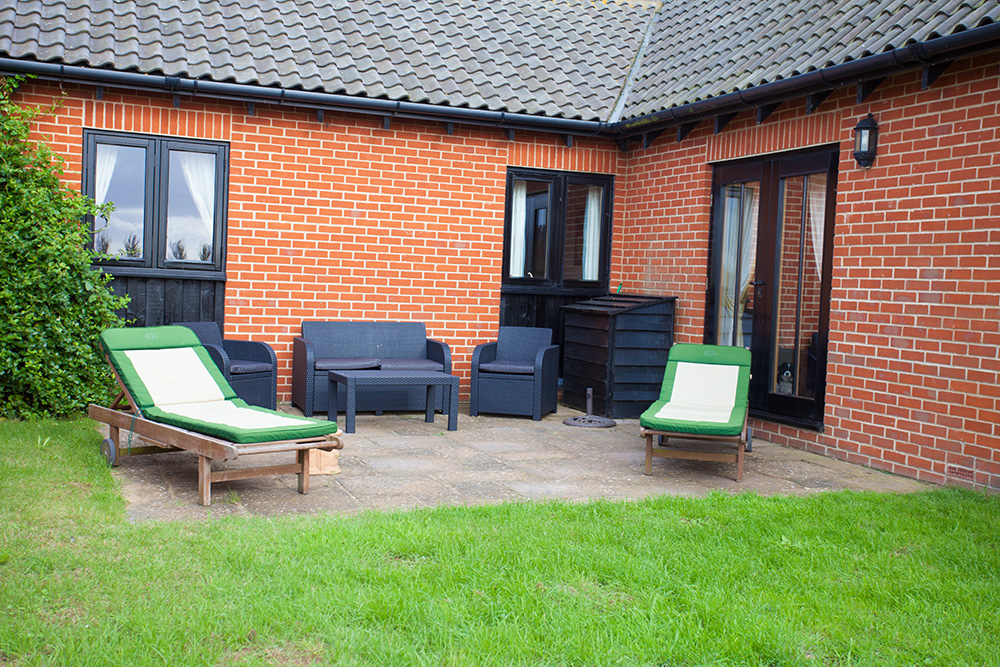
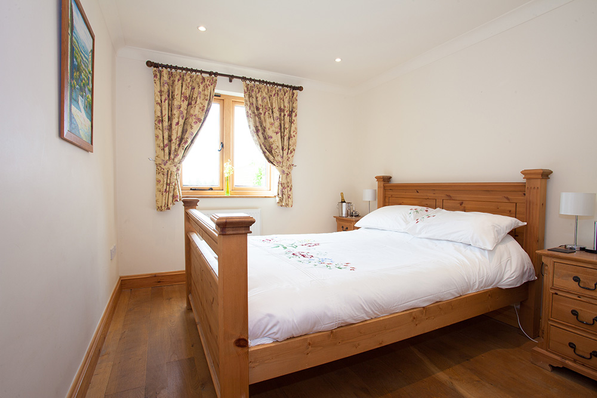

Gallery



If you've come for a quiet get away near a beach then look no further.The perfect place to explore the beautiful British country side right from your back garden.
Breath in that country air, relax and unwind. Enjoy a book and glass of wine in the garden or if you fancy being a bit more active, you can enjoy the luxury of a heated outdoor communal pool from May - late September, an outdoor tennis court or a gentle estate walk taking in your surroundings.
The Meadow Dairy is positioned on the small and exclusive Manor House Estate which stands on the edge of the coastal village of Bawdsey, situated in one of the prettiest parts of Suffolk, with many picturesque villages to explore.
Bawdsey Quay has a water sports centre and is an easy cycle ride or short drive away where you can watch the children crabbing, sit on the small sandy beach, visit the Boatyard café for a coffee or light lunch or take the charming foot ferry to Felixstowe old town and enjoy some local fish and chips.
There is a small local village shop and a public house about one mile away in the neighbouring village of Alderton.
The local market town of Woodbridge with a farmers market every Saturday, cinema, a small supermarket and many local independent shops are all close by.
Venture out to Orford Castle to experience some English heritage or The SuffolkPunch Trust to meet the wonderful horses and take a walk around the farm.
The picturesque seaside towns of Aldeburgh and Southwold are a delight and both within easy reach as is the famous Sutton Hoo. A drink at the nearby Ramsholt Arms overlooking the River Deben and the sailing boats is a very pleasant way to spend an evening.
Please note that pets will only be permited as agreed and the outdoor communal pool wil be closed from the end of
september through to the the May bank holiday. For more information on availability, pricing and booking please visit - here
"A truely stunning holiday home surrounded by the peaceful country side. Already looking at dates to book our next visit" - L Candler
"Wonderful place to say in lovely countryside. Loved the heated swimming pool" - Emma Bellchambers
"Love this place and so do my children. We have been down every year for the last 5 years and find it home from home" - Janice Shimmers
Should you require further information or to check availability
please email:meadowdairy@outlook.com
The Meadow Dairy, The Manor House Estate,
Bawdsey, Woodbridge, Suffolk, IP12 3AL